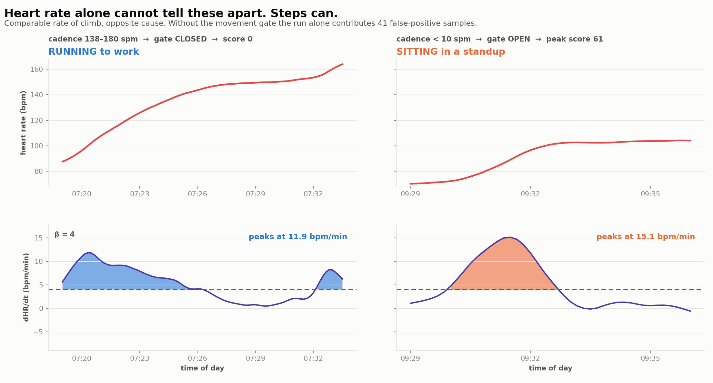
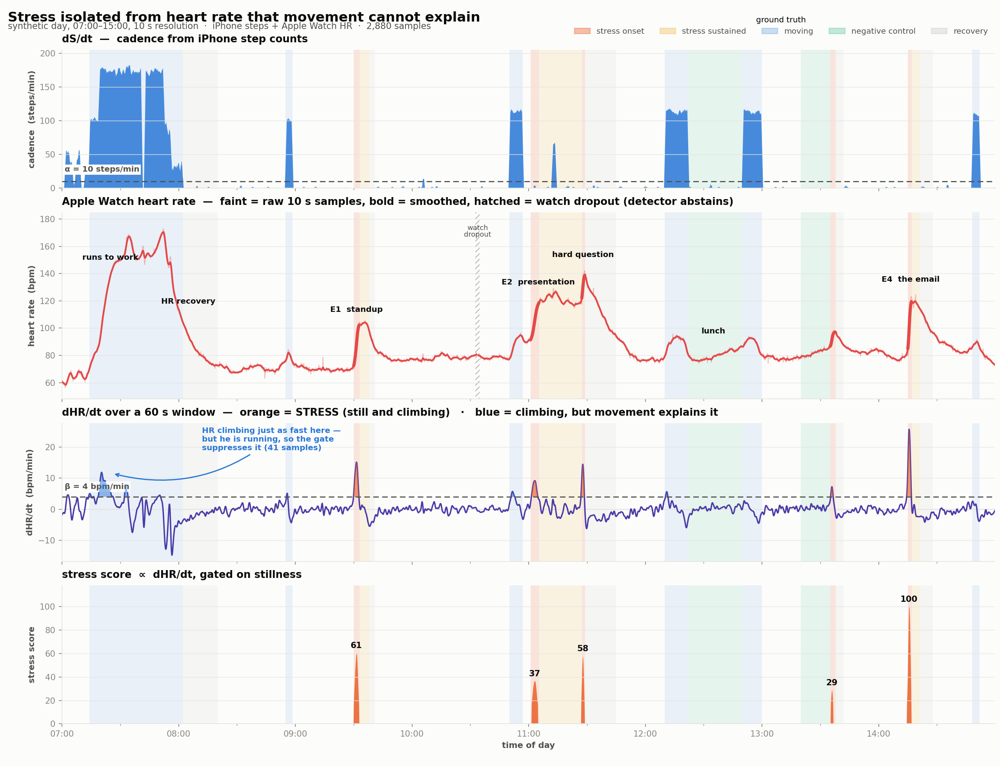

iPhone step counts
data/steps_10s.csv
Pedometer count per 10-second bin.
timestamp steps 2026-03-04 07:00:00 1 2026-03-04 07:00:10 0 2026-03-04 07:00:20 0 2026-03-04 07:00:30 0
Eight hours of iPhone step counts and Apple Watch heart rate at 10-second resolution, with labelled stress events. Synthetic, seeded, and reproducible — built so a stress detector can be scored against a known answer key.
S is cumulative steps, so dS/dt is cadence. Heart rate that climbs while the step channel says you are still cannot be explained by movement.
Timestamps run 07:00:00 to 14:59:50 on a uniform 10-second raster with no gaps in the grid
itself. Regenerate any of these with python generate_day.py — it is
seeded, so it reproduces byte-identically.
data/steps_10s.csv
Pedometer count per 10-second bin.
timestamp steps 2026-03-04 07:00:00 1 2026-03-04 07:00:10 0 2026-03-04 07:00:20 0 2026-03-04 07:00:30 0
data/heart_rate_10s.csv
Blank cell where the watch dropped the sample — not interpolated.
timestamp hr_bpm 2026-03-04 07:00:00 62.0 2026-03-04 07:00:10 60.5 2026-03-04 07:00:20 60.1 2026-03-04 07:00:30 59.4
data/merged_10s.csv
The join to feed a pipeline. Signals only, no labels, so a detector cannot cheat.
timestamp steps hr_bpm 2026-03-04 07:00:00 1 62.0 2026-03-04 07:00:10 0 60.5 2026-03-04 07:00:20 0 60.1 2026-03-04 07:00:30 0 59.4
data/ground_truth_events.csv
The answer key. Keep it away from anything you are scoring.
start end label kind 2026-03-04 07:00:00 2026-03-04 07:01:30 still in bed, phone on the nightstand baseline 2026-03-04 07:01:30 2026-03-04 07:03:00 up, bathroom baseline 2026-03-04 07:03:00 2026-03-04 07:05:30 getting dressed baseline 2026-03-04 07:05:30 2026-03-04 07:07:00 sitting on the bed, shoes baseline
data/stress_episodes.csv
Output of stress_detect.py, not an input.
start end dur_min peak_score peak_dHR_dt area 2026-03-04 09:30:00 2026-03-04 09:32:40 2.83 60.6 15.1 118.0 2026-03-04 11:01:30 2026-03-04 11:04:40 3.33 36.6 9.2 95.4 2026-03-04 11:27:00 2026-03-04 11:28:40 1.83 57.9 14.5 73.7 2026-03-04 13:35:20 2026-03-04 13:36:30 1.33 28.9 7.2 31.7
data/stress_timeline.csv
Derivatives, gate state and score for every sample. Output, not an input.
timestamp steps hr_bpm valid hr_smooth dHR_dt cadence_spm gate_open is_stress stress_score gt_kind 2026-03-04 07:00:00 1 62.0 True 60.72412882367123 -1.8643289864799482 2.0 False False 0.0 baseline 2026-03-04 07:00:10 0 60.5 True 60.46119323550684 -1.6698507646056984 1.5 False False 0.0 baseline 2026-03-04 07:00:20 0 60.1 True 60.19178985326025 -1.4753725427314486 1.2000000000000002 False False 0.0 baseline 2026-03-04 07:00:30 0 59.4 True 59.93768477989037 -1.280894320857247 1.0 False False 0.0 baseline

